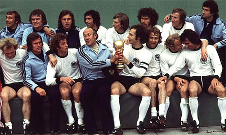
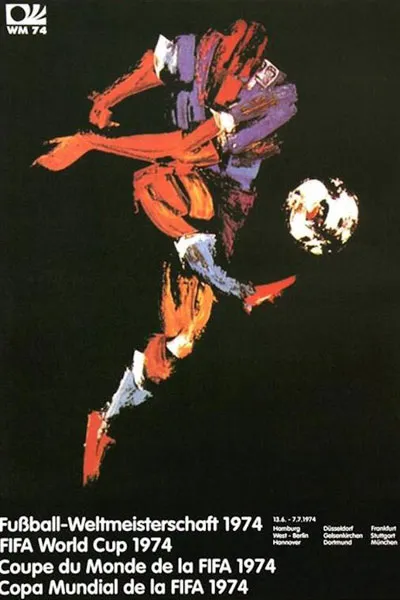
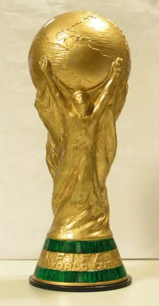
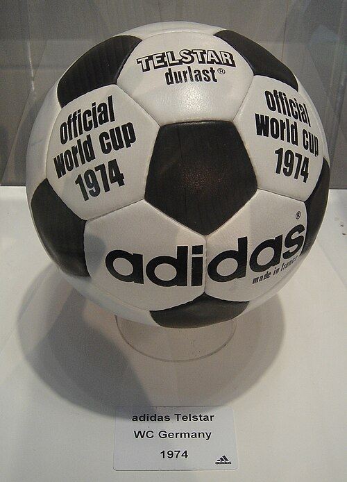

Seleccion Campeona del Mundo

Poster oficial del Mundial de Alemania 1974

Trofeo del Mundial de Alemania 1974

Album de cromos del Mundial de Alemania 1974

Balon oficial del Mundial de Alemania 1974
